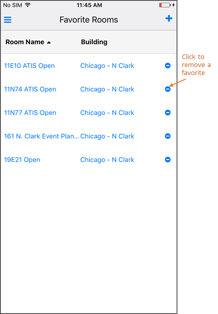

Remove a Favorite Location
When you no longer wish to see a location listed first in search results, you can remove it from your personalized list.
To remove a Favorite Location:
- Navigate to your Favorites list by clicking on the main menu in the upper left corner of and selecting Favorite Locations.

- Click the Remove icon to remove a Favorite from your list.
